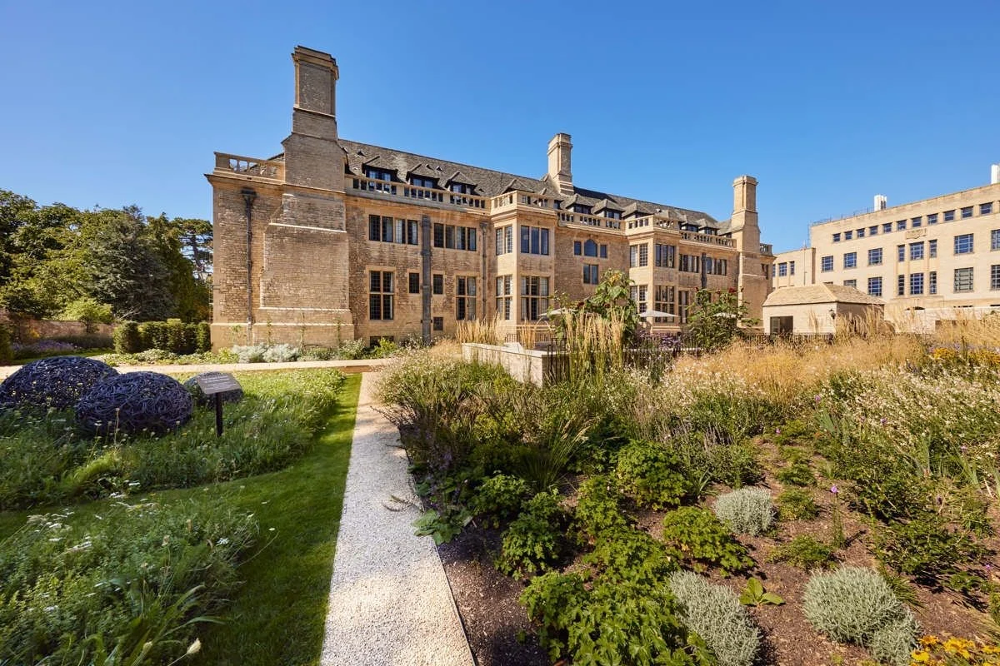

Schedule
Friday 21 August
-
Warm-Up Cricket Match & Welcome Tea Balliol College Master's Field, Jowett Walk, Oxford, OX1 3TL
Saturday 22 August
-
Arrival St Margaret’s Church, St Margaret’s Road, Oxford OX2 6RX
-
Wedding Ceremony St Margaret’s Church, St Margaret’s Road, Oxford OX2 6RX
-
Guided Meadow Walk to Reception
-
Wedding Reception The Medley Walled Garden, Medley Manor Farm, Oxford OX2 0NJ
-
Carriages